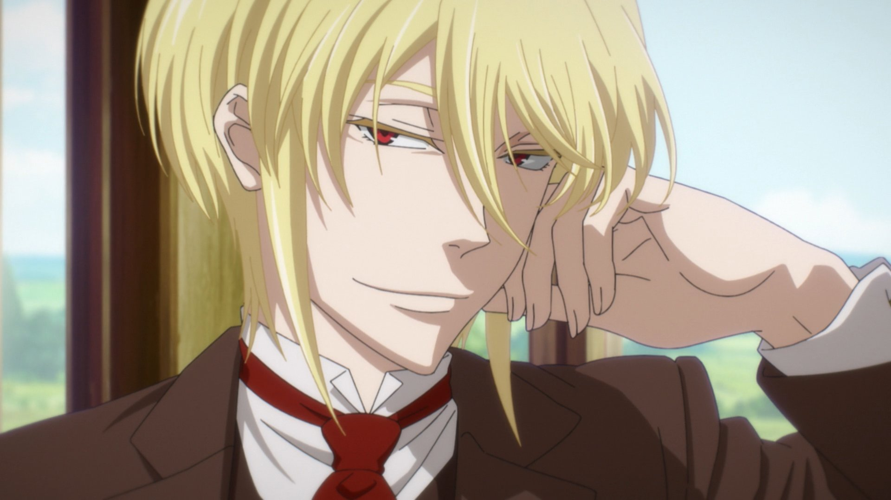

Anime Recommendations
Anime is a form of entertainment that offers a variety of interesting genres. Here are some recommended anime that you must watch:
- Moriarty the Patriot
- Kimi ni Todoke
- Bungou Stray Dogs
- Haikyuu
- One Piece

Moriarty the Patriot Synopsis
Moriarty the Patriot is an anime that tells the story of William James Moriarty, a genius man with the ambition to create justice in the world through unconventional means. Set in the Victorian era in England, this anime portrays Moriarty's struggle against social injustice by becoming the archenemy of Sherlock Holmes.